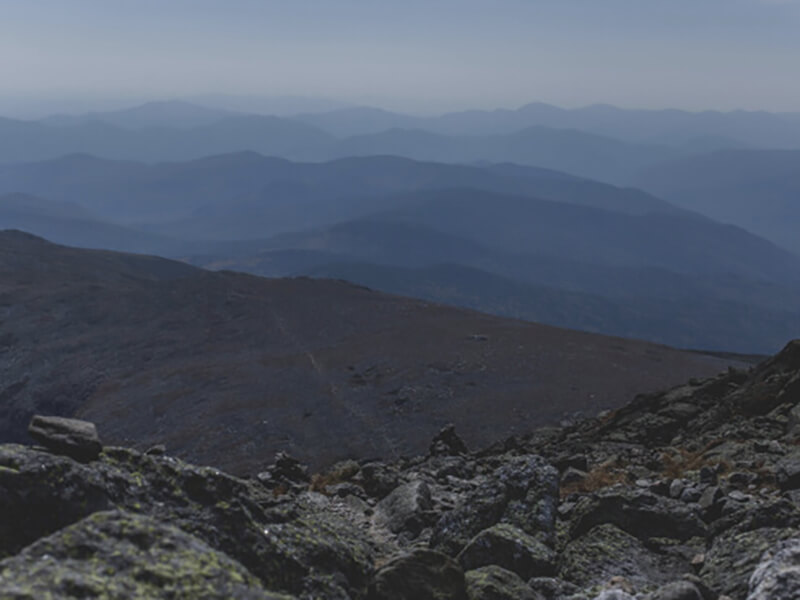
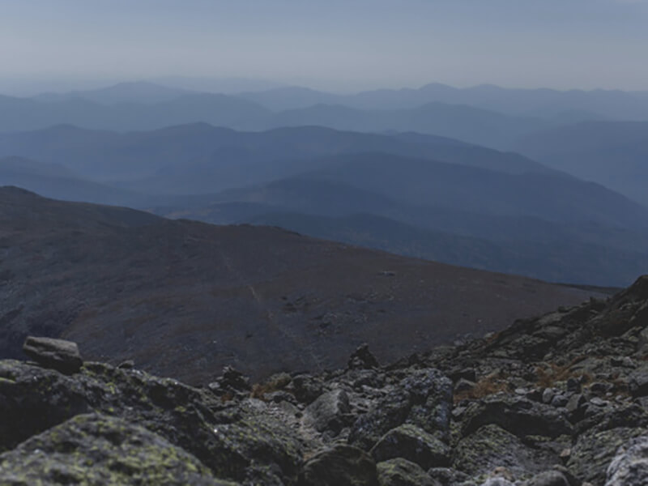

From Portland to Portland
An epic bicycle journey from Portland, ME. to Portland, OR

YOUR JOURNEY STARTS HERE
Know the country you live in a little better
That's exactly what we have arranged for you via this travel story
Need more action and adventure in your life instead of the same old routine? From Portland, Maine to Portland, Oregon we're going to take you on an exciting journey through some unknown regions of your country. Leave the car at home and travel by bike starting in New England where it all began. You will pass through 12 beautiful states, covering a total of 3,600 miles, and accomplish 3 monumental missions. Partying and taking a selfie with a famous rock star, donating $1 to a billionaire to help eradicate polio in Africa, and even stopping by famous author Stephen King's house to say hi and asking him to sign your favorite book.
- Distance (miles) 3,644
- Travel time (days) 22
- Highest point (feet) 9,613
- Lowest point (feet) -3


 



Maine

Still, as sparsely populated as it was in the 1600s, this is an extraordinary and highly underrated state full of rich history and majestic natural beauty. Maine is the main state you want to be sure not to miss. As your journey is going to be a long one, you had best be prepared for an arduous trek.
Thankfully, not only is Maine home to the very first European settlers on US territory in the era of Vikings, but is also home to L.L. Bean, which is a great company to grab a super sturdy backpack from for your 3-month expedition.
Average cost: $80-100.
New Hampshire

URL
timberland.comThere's no better place to lose yourself in nature than in springtime New Hampshire. As serene and beautiful as it was in the 1700s, this state is still much less traveled than its neighbors to the South. So enjoy it while it lasts.
You won't be on your bike the whole time, so doesn't it make sense to pick up some extra footwear? Fortunately for you, the best outdoor shoe company in the history of the world proudly hails from this state. Cycle by the Timberland headquarters in Stratham, and pick up a pair of rugged, waterproof boots to keep your feet dry. Fitting for unpredictable weather you may be confronted by while passing through the Appalachians. These boots are also better than cycling shoes when pitching a tent.
Average cost: $100-150.
Maine
Still, as sparsely populated as it was in the 1600s, this is an extraordinary and highly underrated state full of rich history and majestic natural beauty. Maine is the main state you want to be sure not to miss. As your journey is going to be a long one, you had best be prepared for an arduous trek.
Thankfully, not only is Maine home to the very first European settlers on US territory in the era of Vikings, but is also home to L.L. Bean, which is a great company to grab a super sturdy backpack from for your 3-month expedition.
Average cost: $80-100.
Maine
Still, as sparsely populated as it was in the 1600s, this is an extraordinary and highly underrated state full of rich history and majestic natural beauty. Maine is the main state you want to be sure not to miss. As your journey is going to be a long one, you had best be prepared for an arduous trek.
Thankfully, not only is Maine home to the very first European settlers on US territory in the era of Vikings, but is also home to L.L. Bean, which is a great company to grab a super sturdy backpack from for your 3-month expedition.
Average cost: $80-100.
Maine
Still, as sparsely populated as it was in the 1600s, this is an extraordinary and highly underrated state full of rich history and majestic natural beauty. Maine is the main state you want to be sure not to miss. As your journey is going to be a long one, you had best be prepared for an arduous trek.
Thankfully, not only is Maine home to the very first European settlers on US territory in the era of Vikings, but is also home to L.L. Bean, which is a great company to grab a super sturdy backpack from for your 3-month expedition.
Average cost: $80-100.